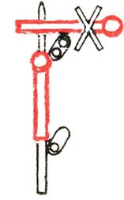

Κεφάλαιο Ι - Εισαγωγικές σημειώσεις, ορισμοί, γενικές διατάξεις¶
Άρθρο 1 - Εισαγωγικές σημειώσεις¶
Οι διατάξεις του Κεφαλαίου Ι ισχύουν ομοιόμορφα για όλα γενικά τα τμήματα του δικτύου και αναφέρονται στα κάθε κατηγορίας σήματά του.
α. Ιδιαίτερο τεύχος, που αναφέρεται στα ηλεκτρικά φωτοσήματα και λοιπά σήματα των εγκαταστάσεων τηλεχειρισμού της περιοχής των σταθμών Επιβατικού και Διαλογής Θεσσαλονίκης, αποτελεί το «Παράρτημα Ι» του Κανονισμού Σημάτων.
β. Ιδιαίτερο τεύχος, που περιγράφει τα οπτικά σήματα και καθορίζει τις διαστάσεις και λοιπές κατασκευαστικές τους λεπτομέρειες, καθώς και τη θέση τοποθετήσεως των οπτικών σημάτων καλύψεως σταθμών και κύριας γραμμής, αποτελεί το «Παράρτημα II» του Κανονισμού αυτού*.
* Το παράρτημα ΙΙ αναφέρεται στα ηλεκτρικά φωτοσήματα των τμημάτων διπλής γραμμής Αθηνών - Οινόης και ΤΧ1 - Πλατέος, που είναι εξοπλισμένα με εγκαταστάσεις Ηλεκτρικής Σηματοδότησης και Ασφάλειας (ΕΗΣΑ).
γ. Ιδιαίτερο τεύχος, που αναφέρεται στη φωτεινή σηματοδότηση του τμήματος της μονής γραμμής Τιθορέας - Δομοκού** αποτελεί το «Παράρτημα III».
** Το τμήμα αυτό της γραμμής είανι επίσης εξοπλισμένο με εγκατάσταση Ηλεκτρικής Σηματοδοτήσεως και Ασφάλειας (ΕΗΣΑ) και υπόκειται σε Κεντρικό Έλεγχο Κυκλοφορίας από το Σταθμό Λειανοκλαδίου.
Στον παρόντα:
α. Δύο εικόνες στην ίδια σελίδα και σε οριζόντια σειρά, που χωρίζονται με κάθετη γραμμή, παριστάνουν αντίστοιχα:
Η μεν προς τ' αριστερά, τις ενδείξεις του σήματος κατά την ημέρα.
Η δε προς τα δεξιά, τις ενδείξεις του ιδίου σήματος κατά τη νύχτα.
β. Μια εικόνα στη μέση της σελίδας είναι ένδειξη, ότι το σήμα, που απεικονίζει, δε φωτίζεται κατά τη νύχτα και ότι, συνεπώς, το ίδιο σήμα ισχύει τόσο κατά την ημέρα όσο και κατά τη νύχτα.
γ. Αν δεν απεικονίζεται οπίσθια όψη οπτικού σήματος, είναι ένδειξη, ότι αυτή δεν έχει κάποια ιδιαίτερη σημασία για τη σηματοδότηση.
δ. Όπου στις εικόνες αναφέρεται «φως» εννοείται το φως του φανού του σήματος.
ε. Με διαταγή της Διοικήσεως, μπορούν ν' αντικαθίστανται οι πιο κάτω αναφερόμενες φωτεινές ενδείξεις νύχτας φανών σημάτων, με έγχρωμα αντανακλαστικά σήματα, που αποδίδουν, με αντανάκλαση του φωτός που πέφτει σ' αυτά, τις ίδιες κατά το σχήμα και χρώμα ενδείξεις νύχτας και να καθορίζεται σε ποια σήματα και ποια σημεία ή τμήματα του δικτύου θα εφαρμόζεται η αντικατάσταση αυτή.
Στις εικόνες: Η φορά κινήσεως των χειρών ή του χειροφανού δηλώνεται με γραμμή, που φέρει βέλος προς την κατεύθυνση της κινήσεως.
Στην περίπτωση των σημάτων, με τη λέξη «δίσκος» υποννοούνται τα σήματα που έχουν κυκλικό ή τετράγωνο σχήμα και με τη λέξη «πινακίδα» τα υπόλοιπα σήματα που έχουν μια και μόνη αμετάβλητη ένδειξη και που το σχήμα τους περιγράφεται ιδιαίτερα κατά περίπτωση.
Κάθε σήμα χαρακτηρίζεται μ' ένα αριθμό και κάθε ένδειξή του χαρακτηρίζεται με τον ίδιο αριθμό, που ακολουθείται από ένα γράμμα του αλφαβήτου. Χρησιμοποίηση των συνθηματικών αυτών ενδείξεων, θα γίνεται στις υπηρεσιακές γενικά σχέσεις.
Όπου στον παρόντα Κανονισμό αναφέρονται σαν εφόδια προσωπικού για σηματοδότηση χειροφανοί, σημαίες, σφυρίχτρες, σάλπιγγες, κροτίδες, πηλίκιο, ράβδος σηματοδοτήσεως κλπ., αυτά είναι εκείνα που η Διοίκηση έχει εγκρίνει.
Κενή για μελλοντική προσθήκη.
Κενή για μελλοντική προσθήκη.
Άρθρο 2 -Ορισμοί¶
Στον παρόντα κανονισμό:
Με τον όρο κύρια γραμμή χαρακτηρίζεται το τμήμα της σιδηροδρομικής γραμμής, που περιλαμβάνεται μεταξύ των κύριων σημάτων καλύψεως δυο συνακόλουθων σε λειτουργία σταθμών.
Με τον όρο Σταθμός χαρακτηρίζεται κάθε σύμπλεγμα γραμμών ή και μία μόνο γραμμή που:
Επικοινωνεί με την κύρια γραμμή, με μία ή και περισσότερες αλλαγές τροχιάς.
Συνδέεται με τηλέγραφο ή τηλέφωνο εφοδιασμένο συνήθως με καταγραφική συσκευή, με όμοια συμπλέγματα που βρίσκονται και προς τις δύο κατευθύνσεις της κύριας γραμμής και
Καλύπτεται με σήματα καλύψεως.
Λέγοντας περιοχή του σταθμού εννοούμε το τμήμα του σταθμού, που περικλείεται από τα κύρια σήματα καλύψεώς του.
Με τον όρο αργός σταθμός εννοείται ο σταθμός, που για την κυκλοφορία των αμαξοστοιχιών έχει αποσυρθεί από την υπηρεσία, σύμφωνα με τον πίνακα ωρών υπηρεσίας του.
Με τον όρο αμαξοστοιχία χαρακτηρίζεται γενικά είτε άθροισμα οχημάτων, που συνδέονται μεταξύ τους και με κινητήριο όχημα, είτε και κάθε κινητήριο όχημα που κυκλοφορεί μόνο του, τα οποία παραλήφθηκαν από προσωπικό αμαξοστοιχιών ή από εκείνο το προσωπικό που εκτελεί τέτοια καθήκοντα και τα οποία πρόκειται να κινηθούν στην κύρια γραμμή μέχρι να παραδοθούν και πάλι, από το προσωπικό αμαξοστοιχιών, στο τελικό προορισμό τους.
Με τον όρο ελιγμός χαρακτηρίζεται κάθε κίνηση οχήματος με ή χωρίς δική του κινητήρια δύναμη ή και συνθέσεως οχημάτων και συρμοκινητήρων στις γραμμές ενός σταθμού ή στάσεως που σκοπό έχει το σχηματισμό, την τροποποίηση και τον αποσχηματισμό των συνθέσεων των αμαξοστοιχιών, τη μετατόπιση τροχαίου υλικού, τμημάτων συνθέσεων αμαξοστοιχιών ή αμαξοστοιχιών ολόκληρων.
Με τον όρο κυκλοφορία χαρακτηρίζεται η κίνηση των αμαξοστοιχιών στην κύρια γραμμή και η είσοδος, διέλευση και έξοδος τους από την περιοχή των σταθμών.
Με τον όρο Σταθμάρχης χαρακτηρίζεται ο υπάλληλος, που είναι σε υπηρεσία σ ένα σταθμό και ο οποίος ευθύνεται για την ασφάλεια της κυκλοφορίας των αμαξοστοιχιών και μπορεί να επιτρέψει την αναχώρηση ή την ελεύθερη διέλευση τους από το σταθμό. Αυτός φέρει το σήμα, που ορίζεται στο σχετικό κεφάλαιο του παρόντος κανονισμού.
Με τον όρο Μηχανοδηγός εννοείται ο υπάλληλος που διευθύνει κάθε όχημα που έχει δική του κίνηση.
Με τον όρο προσωπικό αμαξοστοιχίας χαρακτηρίζονται όλοι οι υπάλληλοι έλξεως και κινήσεως, που βρίσκονται σε υπηρεσία στην αμαξοστοιχία.
Με τον όρο ατμοσφυρίχτρα εννοείται η μηχανική σφυρίχτρα κάθε κινητήριου οχήματος.
Με τον όρο πρόσθια όψη σήματος εννοούμε την όψη του οπτικού σήματος, την οποία βλέπει εκείνος προς τον οποίο απευθύνεται το σήμα, όταν πλησιάζει προς αυτό, ενώ με τον όρο οπίσθια όψη σήματος εννοούμε την όψη πίσω από την πρόσθια.
Με τους όρους δεξιό και αριστερά χαρακτηρίζεται:
α. Όταν πρόκειται για αμαξοστοιχίες, η δεξιά ή αριστερή πλευρά της αμαξοστοιχίας, για τον παρατηρητή που ατενίζει προς τη φορά της κινήσεως της.
β. Όταν πρόκειται για ελιγμούς που γίνονται με κινητήριο όχημα, η πλευρά του κινητήριου οχήματος, προς την οποία βρίσκεται ο Μηχανοδηγός, ορίζεται ως δεξιά και η αντίθετη, ως αριστερή.
γ. Όταν πρόκειται για τη γραμμή, το δεξιό ή αριστερό μέρος της για τον παρατηρητή που ατενίζει προς τη φορά χιλιομετρήσεως.
δ. Όταν πρόκειται για σήμα, η δεξιά ή αριστερή πλευρά του για τον παρατηρητή που ατενίζει την πρόσθια όψη του σήματος.
Κενή για μελλοντική προσθήκη.
Κενή για μελλοντική προσθήκη.
Κενή για μελλοντική προσθήκη.
Κενή για μελλοντική προσθήκη.
Άρθρο 3 - Γενικές Διατάξεις¶
Κάθε υπάλληλος, οποιοδήποτε βαθμό και αν έχει, οφείλει απόλυτη και άμεση συμμόρφωση προς εκείνα που παραγγέλλονται από τα σήματα.
Κάθε υπάλληλος που από τα υπηρεσιακά του καθήκοντα υποχρεούται να δίνει ή δέχεται σήματα, οφείλει να έχει αντίτυπο του παρόντος Κανονισμού και να γνωρίζει καλά τις διατάξεις τουπου έχουν σχέση με την υπηρεσία του.
Το σήμα πρέπει να δίνεται τόσο έγκαιρα όσο χρειάζεται, ώστε εκείνος προς τον οποίο απευθύνεται, να έχει στη διάθεση του τον απαιτούμενο χρόνο για να το αντιληφθεί και, στη συνέχεια, να εκτελέσει στην κατάλληλη στιγμή εκείνα τα οποία παραγγέλλονται μ’ αυτό.
Όταν συντρέχει περίπτωση, το σήμα πρέπει να συνεχίζεται ή να επαναλαμβάνεται συνεχώς, μέχρι να το αντιληφθούν όλοι εκείνοι προς τους οποίους αυτό απευθύνεται.
Εάν κάποιο σήμα δεν είναι ευκρινές ή δεν έγινε πλήρως αντιληπτό από τον υπάλληλο, προς τον οποίο απευθύνεται, αυτός οφείλει: κατά προτεραιότητα να δώσει στο σήμα την ερμηνεία, η οποία επιβάλλει σ' αυτόν να ενεργήσει κατά τρόπο, που να παρέχει τη μεγαλύτερη δυνατή ασφάλεια και στη συνέχεια ν'αναμένει ή, στην ανάγκη να ζητήσει αμέσως την επανάληψη του σήματος.
Όταν στην κύρια γραμμή δεν υπάρχει σήμα, αυτό σημαίνει για τη διερχόμενη αμαξοστοιχία, ότι η γραμμή είναι ελεύθερη.
Όταν στην περιοχήσταθμού που δεν αργεί δεν υπάρχει σήμα ή αυτόπου υπάρχει δηλώνει απλά και μόνο την παρουσία υπαλλήλου, είναι ένδειξη για τη διερχόμενη αμαξοστοιχία, ότι η γραμμή δεν είναι ελεύθερη και επιβάλλεται άμεση στάθμευση.
Τα σήματα είναι:
Οπτικά τα οποία διακρίνονται σε:
α) Μόνιμα
β) Κινητά
γ) Αμαξοστοιχιών
δ) Προσωπικού
Ακουστικά* τα οποία δίνονται με:
α) Ατμοσφυρίχτρα
β) Σάλπιγγα
γ) Σφυρίχτρα
δ) Κροτίδες
ε) Κώδωνες.
* Ο χρόνος διάρκειας των ακουστικών σημάτων με ατμοσφυρίχτρα, σάλπιγγα και σφυρίχτρα καθορίζεται έτσι:
Βραχύ σήμα: Διάρκεια 1'' (δευτερολέπτου). Συμβολισμός U.
Μακρό σήμα: Διάρκεια 3'' (δευτερολέπτων). Συμβολισμός -.
Παρατεταμένο σήμα: Διάρκεια 6'' (δευτερολέπτων). Συμβολισμός ―.
Συνεχές Σήμα: Χωρίς διακοπή για πολύ μακρό διάστημα.
Όσα από τα οπτικά σήματα πρέπει να φωτίζονται μόνο κατά τη νύκτα (σύμφωνα με όσα ορίζονται πιο κάτω), το άναμμα των πηγών του φωτός τους πρέπει να γίνεται από τη δύση του ηλίου και να διαρκεί μέχρι την ανατολή του. Στα σήματα αυτά, η ένδειξη της νύχτας διαφέρει κατ' αρχή από αυτή της ημέρας, μόνο κατά την προσθήκη φωτεινής ενδείξεως.
Όσες φορές αμαξοστοιχία πρόκειται να σταθμεύσει σε σταθμό μετά τη δύση του ηλίου, το άναμμα των πηγών φωτός των οπτικών σημάτων, που φέρονται απ' αυτήν, θα γίνεται σε σταθμό, όπου σταθμεύει πριν από τη δύση του ηλίου.
Τα οπτικά σήματα (μόνιμα και κινητά) πρέπει να φωτίζονται και κατά την ημέρα:
α) Μέσα σε σήραγγες μήκους άνω των 200 μ.
β) Όταν από οποιαδήποτε αιτία ή ορατότητα είναι τέτοια, ώστε, αν δεν φωτίζονται, να διακρίνονται δύσκολα από απόσταση 200 μ. τουλάχιστον.
Τα οπτικά σήματα, που απευθύνονται προς αμαξοστοιχία, δίνονται κατ' αρχή προς τη δεξιά πλευρά της (§22α). Στα επόμενα, όπου δεν αναφέρεται η πλευρά τοποθετήσεως ή επιδόσεως οπτικού σήματος, εννοείται η δεξιά. Οι περιπτώσεις συναντήσεως ή επιδόσεως οπτικού σήματος αριστερά της κινούμενης αμαξοστοιχίας αναφέρονται ιδιαίτερα σε κάθε περίπτωση. Τα οπτικά σήματα ελιγμών δίνονται προς την πλευρά του κινητήριου οχήματος, προς την οποία βρίσκεται ο Μηχανοδηγός (§18).
Στα οπτικά σήματα χρησιμοποιούνται τα επόμενα χρώματα, που έχουν τη σημασία που αναγράφεται απέναντι τους,
α. - ερυθρό (πορφυρό): στάθμευση, κίνδυνος
β. - πράσινο: γραμμή ελεύθερη
γ. - πορτοκαλί: προσοχή βραδυπορία.
Το λευκό χρώμα (γαλακτόχρωμο) ή διαφανές ή αστεροειδές (αυτό που ελαφρά κυανίζει) χρησιμοποιείται σε όσες περιπτώσεις ορίζεται στον παρόντα κανονισμό ή στα παραρτήματα του και για όσες ενδείξεις δεν απαιτείται η χρήση ενός χρώματος από τ' αναφερόμενα στην §39 αλλά ακόμη και για την ένδειξη της παρουσίας υπαλλήλου.
Όπου προβλέπεται ως σήμα δίσκος ερυθρός ή πορτοκαλής, μπορεί, στην ανάγκη, να γίνει αντικατάσταση του με σημαία του ίδιου χρώματος, η οποία να είναι ανοιχτή και κατάλληλα στερεωμένη ή να φέρεται από εντεταλμένο υπάλληλο.
Ο φωτισμός των εγκαταστάσεων και χώρων που βρίσκονται κοντά στις γραμμές πρέπει να μη περιλαμβάνει έγχρωμα φώτα, τα οποία είναι δυνατό να εννοηθούν σαν οπτικά σήματα, από εκείνα που αναφέρονται στην §39.
Η χρήση των ακουστικών σημάτων και ιδιαίτερα αυτών που δίνονται με ατμοσφυρίχτρα, πρέπει να περιορίζεται στο απολύτως απαραίτητο.
Τα σήματα καλύψεως σταθμών δεν ισχύουν για τα χειροκίνητα οχήματα γενικά.
Ο χειρισμός των κύριων σημάτων καλύψεως σταθμών γίνεται, όταν το χειριστήριο βρίσκεται μπροστά στο κτίριο επιβατών, από το Σταθμάρχη. Εξαιρετικά σε ειδικές περιπτώσεις και μετά από Διαταγή της Υπηρεσίας, επιτρέπεται ο χειρισμός του χειριστηρίου που βρίσκεται μπροστά στο κτίριο επιβατών να γίνεται από άλλο υπάλληλο, ο οποίος ορίζεται από το Σταθμάρχη και με την ευθύνη του δευτέρου. Όταν το χειριστήριο δε βρίσκεται μπροστά στο κτίριο επιβατών, ο χειρισμός των κύριων σημάτων καλύψεως σταθμών γίνεται από υπάλληλο, που ορίζεται από το Σταθμάρχη και σύμφωνα με τις εντολές του τελευταίου. Σε κάθε περίπτωση αυτός που χειρίσθηκε ένα σήμα, οφείλει να ελέγξει από την οπίσθια ένδειξη του και εφ' όσον είναι σ' αυτόν ορατή, αν το σήμα έλαβε την κατάλληλη ένδειξη.
Τα μόνιμα οπτικά σήματα που βρίσκονται εκτός υπηρεσίας ακυρώνονται με την προσθήκη λευκού «Σταυρού Αγίου Ανδρέα».
{kind=link}
Προκειμένου για μηχανικά σήματα, εκτός από την ανωτέρω επισήμανση, οι βραχίονες ή οι δίσκοι τους ακινητοποιούνται στην κλειστή θέση. Η επισήμανση αυτή μπορεί να παραλειφθεί με άδεια της Υπηρεσίας σε μηχανικά σήματα που οι βραχίονες ή δίσκοι τους αφαιρέθηκαν, ή σε φωτοσήματα που καλύφθηκαν ώστε οι ενδείξεις τους να γίνουν αφανείς.
Κανονικά, τα φωτεινά ή μηχανικά σήματα εκτός υπηρεσίας δεν φωτίζονται. Αν αντιθέτως απαιτήσεις της Υπηρεσίας επιβάλλουν το φωτισμό τους (π.χ. για πραγματοποίηση δοκιμών) πρέπει τότε να ενημερώνονται οι Μηχανοδηγοί.
{kind=link}
Κενή για μελλοντική προσθήκη.
Κενή για μελλοντική προσθήκη.
Κενή για μελλοντική προσθήκη.
Κενή για μελλοντική προσθήκη